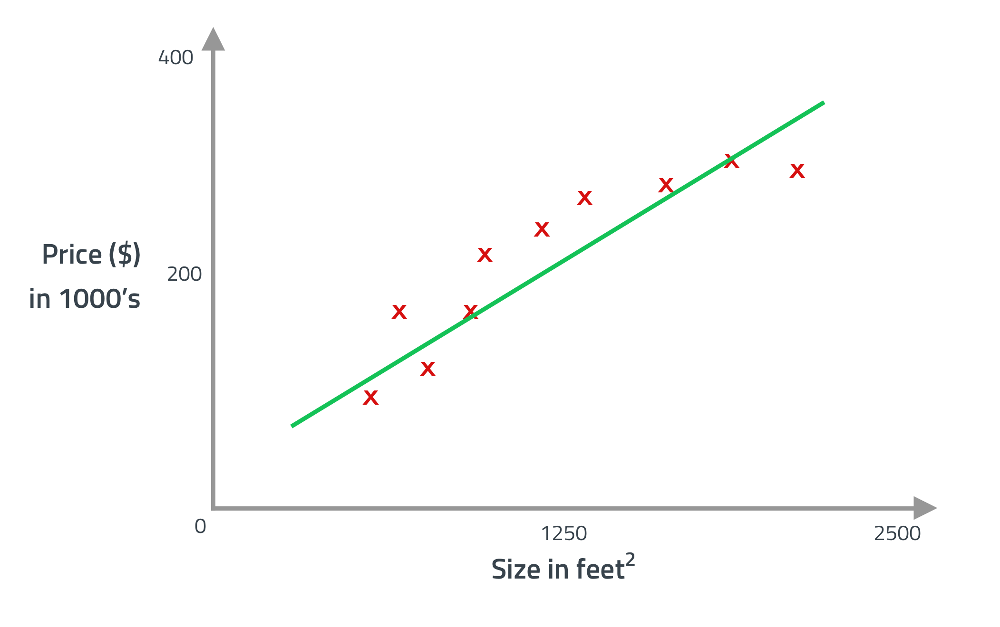
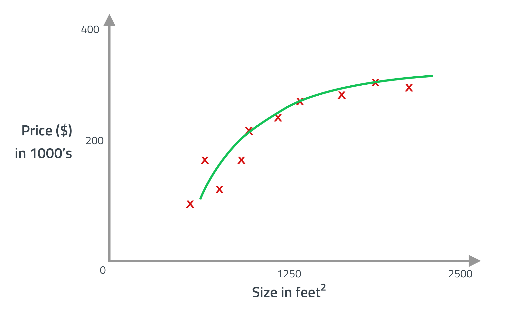

Never pass unsanitized input to your mongodb. Never.
I have a folder for scripts in ~/.bin and added that folder to my $PATH. I put the following script into ~/.bin/resolution and made executable with chmod +x ~/.bin/resolution.
This allows me to quickly get the current resolution of the connected screens (including the interal MacBook screen) by just running the command resolution in my terminal.
#!/bin/bash
system_profiler SPDisplaysDataType | grep Resolution | sed -e 's/^[^R]*//g'
I have a folder for scripts in ~/.bin and added that folder to my $PATH.
Having the following script placed in ~/.bin/extract and made executable with chmod +x ~/.bin/extract allows me to use the same command to extract any file like extract file.zip or extract file.tar.gz. If you are missing an executable used by this script just install it with homebrew.
#! /bin/bash
if [ -f $1 ]
then
case $1 in
*.tar.bz2) tar -jxvf $1 ;;
*.tar.gz) tar -zxvf $1 ;;
*.bz2) bunzip2 $1 ;;
*.dmg) hdiutil mount $1 ;;
*.gz) gunzip $1 ;;
*.tar) tar -xvf $1 ;;
*.tbz2) tar -jxvf $1 ;;
*.tgz) tar -zxvf $1 ;;
*.zip) unzip $1 ;;
*.ZIP) unzip $1 ;;
*.pax) cat $1 | pax -r ;;
*.pax.Z) uncompress $1 --stdout | pax -r ;;
*.rar) unrar x $1 ;;
*.Z) uncompress $1 ;;
*) echo "'$1' cannot be extracted/mounted via extract()" ;;
esac
else
echo "$1 is not a valid file"
fi
Disclaimer: The information and graphics here are mainly taken and summerized from the Stanford machine learning course by Andrew Ng.
Chances are high that you use machine learning every day without knowing it. Everytime you search with Google, get recommended articles on Amazon or send a letter via post you get the results because of machine learning. But lets jump straight to knowledge.
When you have a dataset like shown here you could apply different leadning algorithms. One would be to find a straight line that matches the dataset to make predictions like so: House price prediction  With this prediction a house with the size of 750 square feet would cost around $150,000.
But maybe it is better to use a different learning algorithm like a quadratic polinomial function which would output a prediction like so: House price prediction  This would lead to a prediction around $200,000 for a house of 750 square meter. Both examples are using supervised learning which refers to the fact, that “correct answers” are given. It is also a regression problem, which means it predicts a continuous valued output (price).